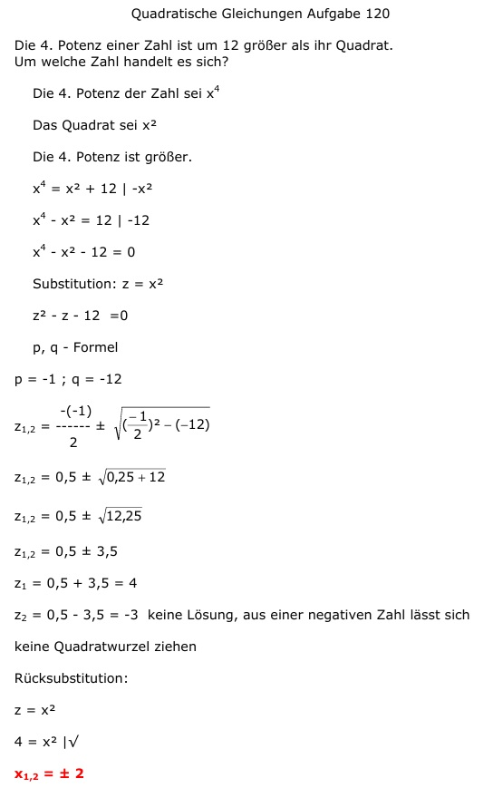

Aufgabe 120 Die 4. Potenz einer Zahl ist um 12 größer als ihr Quadrat. Um welche Zahl handelt es sich? Die 4. Potenz der Zahl sei x4 Das Quadrat sei x2 Die 4. Potenz ist größer. x4 = x2 + 12 | -x2 x4 - x2 = 12 | -12 x4 - x2 - 12 = 0 Substitution: z = x2 z2 - z - 12 =0 p, q - Formel p = -1 ; q = -12  z1,2 = 0,5 ± 3,5 z1 = 0,5 + 3,5 = 4 z2 = 0,5 - 3,5 = -3 keine Lösung, aus einer negativen Zahl lässt sich keine Quadratwurzel ziehen Rücksubstitution: z = x2 4 = x2 |√ x1,2 = ± 2